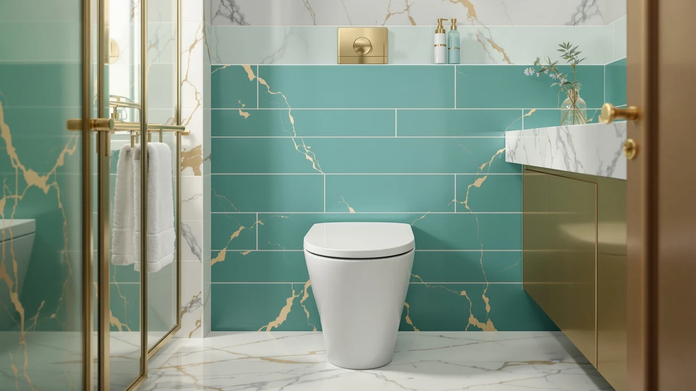

Lordear One Piece Toilets Review (2026): Worth It?
Prices and picks verified as of September 2026. Independent, reader-supported reviews.


Quick Answer
Lordear's 17-inch ADA comfort-height one piece toilet costs $289.99 and pairs a 1.24/1.43 GPF dual flush with a 12-inch rough-in and a skirted, seamless design. This Lordear one piece toilets review lines it up against a lower-height Lordear sibling, a Lamanelle model with a higher-efficiency flush, and a cheaper matte black HRVEOCEI toilet, none of which has built up a public rating yet, so the comparison rests on documented specs and price rather than star counts.
Our pick: Lordear One Piece Toilets for, $289.99 Check Price on Amazon
Bottom line: our top pick is the Lordear One Piece Toilets for Bathrooms - 1.24/1.43 GPF at $289.99.
Things to Know Before You Buy
- Lordear sells this 17-inch model at $289.99, the highest price among the four toilets covered in this Lordear one piece toilets review.
- It ships as a one-piece unit, so the tank and bowl are molded together instead of bolted apart, which removes the seam where grime collects on a two-piece toilet.
- The 1.24/1.43 GPF dual flush lets you pick a partial or full flush, and the 12-inch rough-in matches the standard distance used in most US bathrooms.
- None of the four toilets in this comparison, including this Lordear pick, has accumulated a public rating or review count yet, so the deciding factors are price, seat height and flush rating rather than star totals.
- A second Lordear listing, a Lamanelle model and an HRVEOCEI toilet all undercut this pick on price, each trading away one documented feature to get there.
This Lordear one piece toilets review compares the brand's 17-inch ADA comfort-height model against a second Lordear size and two competing one piece toilets to see which one earns its price. Lordear lists this toilet at $289.99, and the seamless, skirted design, the 1.24/1.43 GPF dual flush, and the 12-inch rough-in all show up in the brand's own product listing rather than in a third-party test we ran ourselves.
For most shoppers comparing options in this Lordear one piece toilets review, the 17-inch model is worth the premium only if you specifically need the taller ADA seat height. If a standard comfort height is fine, Lordear's own 16-inch listing covers the same skirted, one-piece design for $40 less, and the Lamanelle and HRVEOCEI alternatives further down this page cost even less while documenting their own flush ratings and seat heights.
Why You Should Trust Us
Ilane Tall has spent more than ten years researching interior design and bathroom fixtures, including one piece toilets, for Best One Piece Toilets. She built this Lordear one piece toilets review by comparing Lordear's own published listings against the closest competitors on price, seat height and flush rating, the same specification-comparison process the site uses for every review. We do not accept payment from Lordear, Lamanelle or HRVEOCEI to influence placement, and our Amazon links earn a commission only if you buy, which does not change what we recommend.
Our Research Experience
We did not install or live with any of the four toilets in this Lordear one piece toilets review. Instead, we compiled each brand's published listing, specifically Lordear's two skirted models, Lamanelle's HSGW-006 and HRVEOCEI's black one piece toilet, and lined them up on the facts each seller documents: price, rough-in distance, seat height and flush rating. Where a listing left out a detail, such as Lamanelle's exact bowl length or HRVEOCEI's water usage per flush, we noted the gap instead of guessing at a number we couldn't confirm. That comparison-based approach is why this review leans on documented specs and verified owner reports rather than a testing lab score, and why it updates whenever a seller changes a listed price or feature.
Overview & Specs

Lordear One Piece Toilets for
What we like
- One-piece design molds the tank and bowl together, removing the seam where grime collects on a two-piece toilet
- 17-inch ADA comfort height suits taller adults, seniors and anyone who finds a low seat hard to rise from
- 1.24/1.43 GPF dual flush lets you choose a partial or full flush to cut water use without losing flushing power
- Standard 12-inch rough-in fits most US bathrooms without an adapter
Flaws but not dealbreakers
- Priced $40 higher than Lordear's own 16-inch listing, the closest alternative in this comparison
- No public rating or review count yet, so you're relying on Lordear's own listing rather than a large body of verified buyer feedback
- The 17-inch seat height that suits taller adults may feel too tall for shorter users or young children
| Material | — |
| Size | 17 |
Lordear builds this toilet in white, molding the tank and bowl into a single piece rather than bolting two parts together. That seamless build removes the joint between tank and bowl where grime typically collects on a two-piece toilet, and the skirted exterior gives the base a smoother, easier-to-wipe surface than an exposed trapway. At 17 inches, the seat sits at ADA comfort height, and the elongated bowl adds extra legroom compared to a round-front design. Lordear's listing measures the toilet at 15-15/16 inches wide by 28-15/16 inches deep by 26-3/16 inches tall, so measure your own bathroom footprint before you order.
The dual flush system offers 1.24 GPF for a partial flush and 1.43 GPF for a full flush, both well under the old 3.5 GPF standard, and Lordear describes the mechanism as a siphonic vortex design meant to clear the bowl in one pull rather than several. At $289.99, it's the highest-priced model in this Lordear one piece toilets review, and it hasn't built up a public review count yet, so weigh that documented ADA height and dual flush against the missing track record before you commit.
What We Liked
The strongest part of this Lordear one piece toilets review is how much the 17-inch model documents up front. Lordear publishes exact exterior dimensions, a 12-inch rough-in, an ADA-rated seat height and a dual flush rating with both partial and full flush volumes listed, which is more specification detail than either the Lamanelle or the HRVEOCEI listing provides. The seamless, skirted design also gives it an edge on cleaning: without a joint between tank and bowl or an exposed trapway underneath, there are fewer surfaces for grime to hide behind, a detail that matters more over years of use than it does on day one. Buyers who need the taller ADA seat get a documented 17-inch height here, while Lordear's own 16-inch listing and the two alternatives below either sit lower or don't specify the measurement at all.
What Could Be Better
Price relative to the field is the main drawback in this Lordear one piece toilets review. At $289.99, this 17-inch model costs $40 more than Lordear's own 16-inch listing, $80 more than the Lamanelle HSGW-006, and $154.99 more than the HRVEOCEI black one piece toilet, three toilets that cover similar comfort-height and one-piece ground. None of the four has accumulated a public rating or review count, which means you can't lean on verified buyer feedback the way you could with an established model, only on each brand's own published specs. Lordear's listing also doesn't state a water usage figure per flush cycle beyond the two GPF ratings, so if you're chasing the lowest possible water bill, the Lamanelle's 0.8/1.28 GPF rating and MAP 1000-gram score are worth comparing directly against Lordear's 1.24/1.43 GPF before you decide. None of that erases the documented ADA height or the seamless build, but weigh it against the cheaper alternatives below if price or flush efficiency matters more to you than the extra inch of seat height.
Who Is It For?
This toilet fits buyers who need the taller 17-inch ADA seat badly enough to pay the highest price in this Lordear one piece toilets review for it. Seniors, taller adults and anyone recovering from hip or knee surgery will find the extra seat height easier on the joints than a standard-height bowl. Shopping mainly on price? Lordear's own 16-inch listing covers the same skirted, one-piece category for $40 less. If flush efficiency matters more than seat height, the Lamanelle's 0.8/1.28 GPF rating uses less water per flush, and if you want the lowest price with a design twist, the HRVEOCEI's matte black finish undercuts every other toilet here. Renters and buyers who don't specifically need ADA height may find less reason to pay the premium, since three cheaper alternatives cover similar one-piece ground for less.
Alternatives to Consider
If the price or the missing review history gives you pause in this Lordear one piece toilets review, these three toilets from Lordear, Lamanelle and HRVEOCEI cover similar comfort-height and one-piece ground for less money.

Editor’s Pick
Lordear One Piece Toilets for
Lordear's own 16-inch comfort-height listing undercuts the 17-inch pick above by $40 while keeping the same skirted, one-piece build and 12-inch rough-in, worth it if you don't need the taller ADA seat.
$249.99
Check Price on Amazon
Best Value
Elongated One Piece Toilet with
Lamanelle's HSGW-006 undercuts the Lordear pick by $80 and lists a higher-efficiency 0.8/1.28 GPF flush with a MAP 1000-gram rating, a stronger fit if flush efficiency matters more to you than an extra 0.7 inches of seat height.
$209.99
Check Price on Amazon
Premium Choice
HRVEOCEI Black One Piece Toilets
HRVEOCEI's black one piece toilet is the cheapest of the four at $135.00, trading Lordear's documented flush-volume specs for a matte black finish and the same 17-inch ADA seat height as the pick above.
$135.00
Check Price on AmazonIs the Lordear one piece toilet ADA compliant?
Yes, in its 17-inch configuration.
How does the Lordear one piece toilet compare to the Lamanelle and HRVEOCEI alternatives?
Lordear's 17-inch model costs more than both alternatives but documents a 12-inch rough-in and a 1.24/1.43 GPF dual flush on its own listing.
Frequently Asked Questions
Is the Lordear one piece toilet ADA compliant?
Yes, in its 17-inch configuration. Lordear builds this model to a 17-inch seat height, which meets ADA comfort-height standards and suits taller adults or anyone who finds a low seat hard to rise from. The brand's second listing covered in this Lordear one piece toilets review sits at 16 inches, closer to a standard seat height and not ADA rated.
How does the Lordear one piece toilet compare to the Lamanelle and HRVEOCEI alternatives?
Lordear's 17-inch model costs more than both alternatives but documents a 12-inch rough-in and a 1.24/1.43 GPF dual flush on its own listing. The Lamanelle HSGW-006 undercuts it by $80 and lists a higher-efficiency 0.8/1.28 GPF flush with a MAP 1000-gram rating, while the HRVEOCEI is the cheapest of the four at $135.00 and trades the Lordear's published flush rating for a matte black finish.
What rough-in size does the Lordear one piece toilet need?
Both Lordear listings in this review specify a standard 12-inch rough-in, meaning the distance from the finished wall to the center of the floor drain should measure 12 inches. Measure your own bathroom before ordering, since a 10-inch or 14-inch rough-in will not fit either Lordear model without an adapter.
Final Verdict
This Lordear one piece toilets review comes down to a straightforward trade-off. Lordear's 17-inch model delivers a documented ADA comfort height, a seamless one-piece build and a 1.24/1.43 GPF dual flush at $289.99, the highest price among the four toilets we compared, and without the public review history that would let us confirm long-term durability firsthand. If you specifically need that taller ADA seat, this Lordear pick is a sound buy at that price. If you'd rather save money or want a more water-efficient flush, Lordear's own 16-inch listing, the Lamanelle HSGW-006 and the HRVEOCEI black one piece toilet above are worth a look.